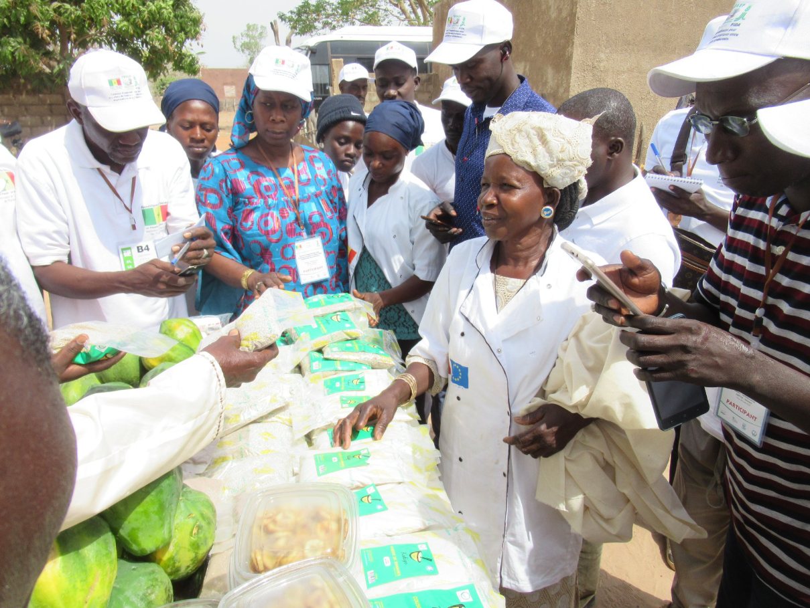
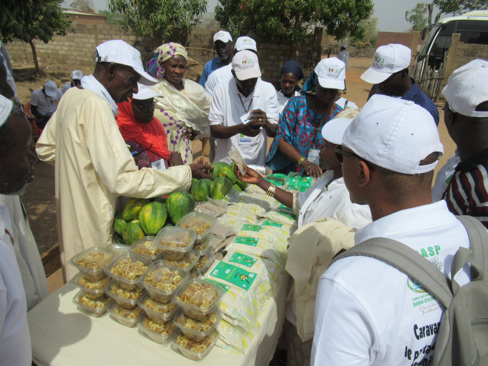
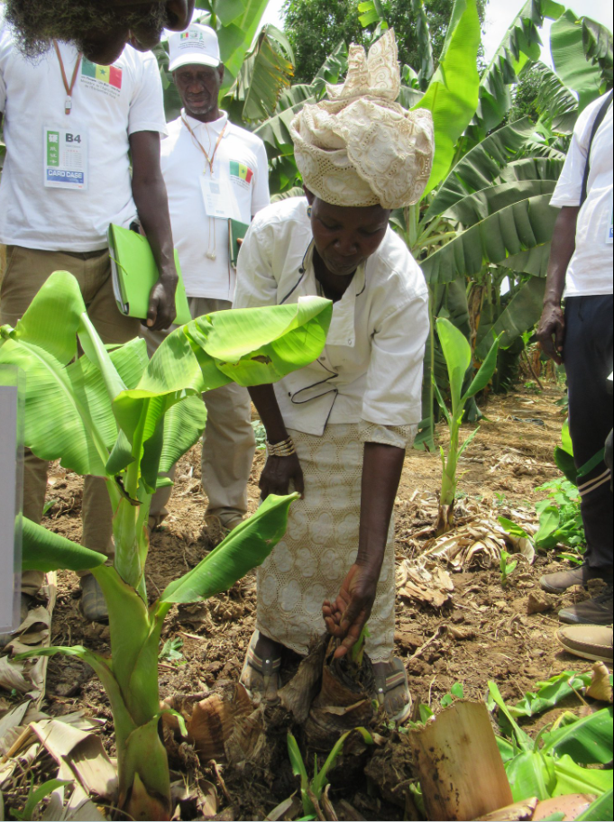
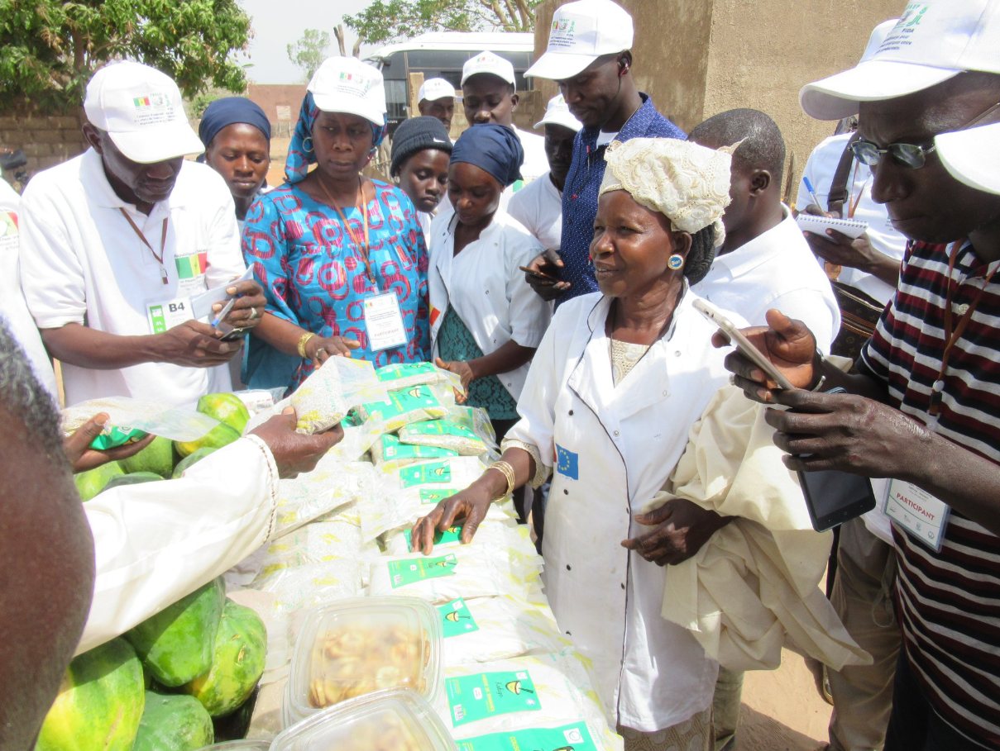
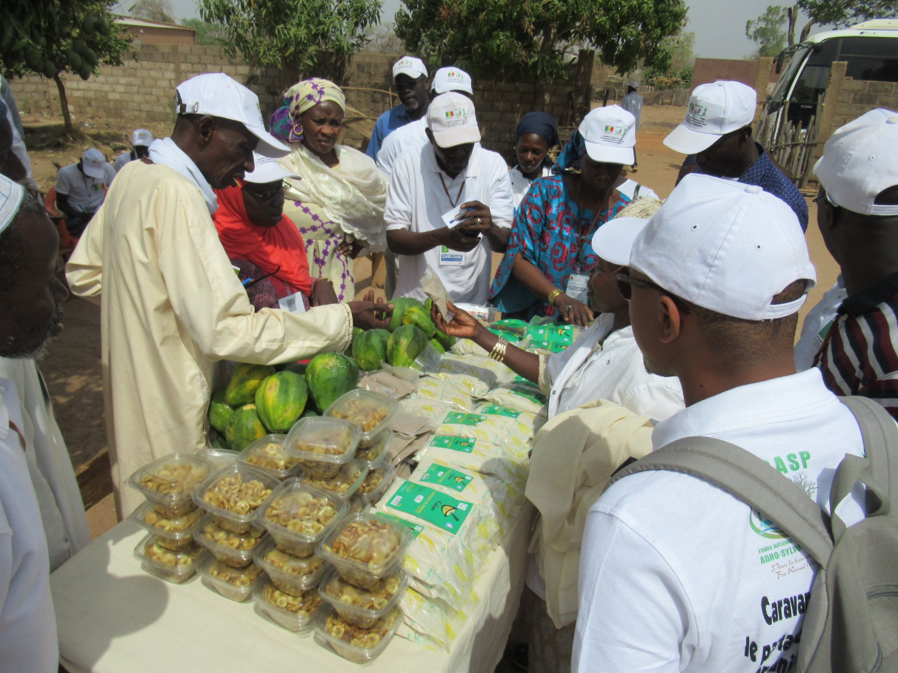
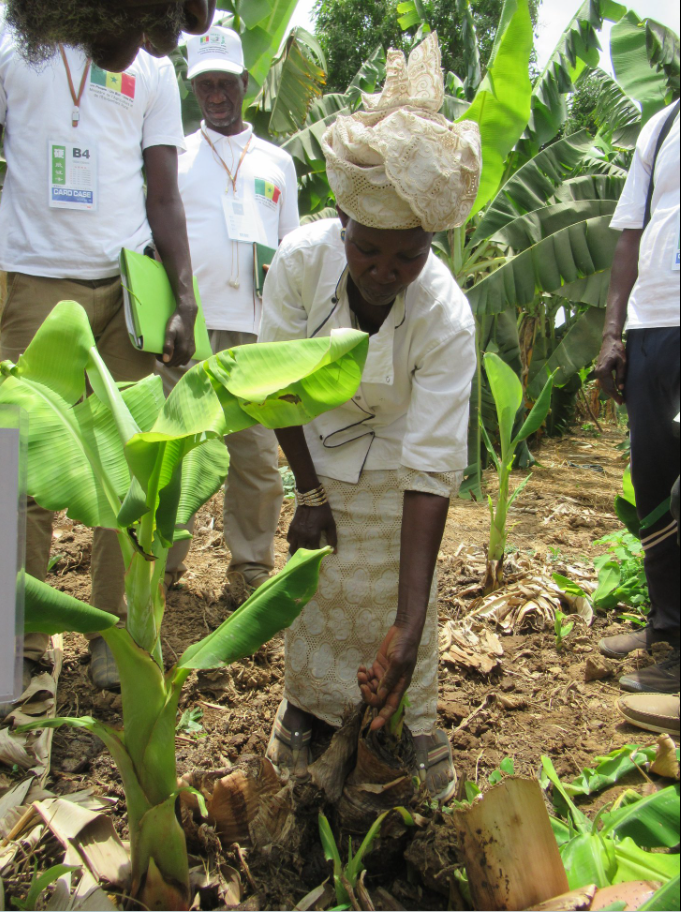

Présenter Kukigo
Mettre en avant l’histoire, la mission et les valeurs : naturel, transformation locale et qualité.
Naturel • Transformation locale • Sénégal
Kukigo valorise des ingrédients simples (banane et autres plantes) pour créer des produits du quotidien. Nos produits alimentaires sont sans gluten.
Vente actuelle : Sénégal. Produits alimentaires sans gluten.
Mettre en avant l’histoire, la mission et les valeurs : naturel, transformation locale et qualité.
Afficher clairement les produits, leurs usages, et comment les obtenir au Sénégal.
Accès rapide au téléphone et à WhatsApp pour commander ou poser des questions.
Marguerite THIAW (Sénégal) transforme des matières premières locales comme la banane, la patate et autres plantes pour créer des produits naturels : aliments et produits d’hygiène.
L’objectif : proposer des alternatives utiles au quotidien, valoriser le local et offrir des produits accessibles aux familles.
Gammes : à base de banane, patate et autres.
Usage : cuisine / pâtisserie / bouillies (selon habitudes).
Savon artisanal pour l’hygiène du quotidien.
Produit traditionnel — description à compléter selon votre recette.
Alternative naturelle — description à compléter.
Préparation traditionnelle — description à compléter.
Préparation traditionnelle — description à compléter.
Usage à préciser (ex : mélange, recette, etc.).
Usage : cuisine / pâtisserie / bouillies (selon recettes).
Préparation traditionnelle — description à compléter.
⚠️ Remarque : Produits naturels "sans gluten" pour l'alimentation et l'hygiène.
 





Pour commander au Sénégal ou poser une question, contacte Kukigo par téléphone ou WhatsApp.